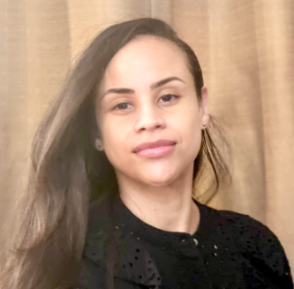

Who we are
Our Professional Team

Ernest Bracy
Eunjung Kim
Garrett Washington

Manish Chaudhari

Mercedes Miranda
What is your “why?
Ernest
My why to advance in software development and effective communication to pursue a lifelong career in tech, allowing me to contribute innovative ideas and positively impact the lives of others.
Eunjung
I want to be myself. I want to be a professional working mom. I want to be financially independent.
Garrett
I want to build a project that will better enable my community to build comradery and kinships.
Manish
To pursue a career in tech and be able to support my mother.
Miranda
I am eager to gain new skills and knowledge, especially in technology, to improve myself and my future.
What are your reflections/lessons
from Professional Development with Coach P?
Ernest
Consistency and balance. I felt these were important for me to learn and eventually master to become more effective and efficient when handling challenges to reach my goals.
Eunjung
Branding myself. For this, I had to do self-reflection in multiple directions, and I was able to explain myself better than before.
Confidence! I used to shrink myself while having a career break and keep failing to get a job. But through PD class, I was able to gain more confidence than before, and this has been a great experience for me.
Garrett
I realized that ‘closed mouths don't get fed’ so no I am able to express my needs without feeling anxious or as if im burdening others
Manish
At Per Scholas I learned that I’m part of a community with talented and kind individuals. I learned to be persistent and resilient in pursuit of my goals.
Miranda
Coach P's guidance helped me learn consistency, balance, and risk-taking. I now can pursue my goals more effectively and deal with challenges better.
What are your long and short-term goals?
Ernest
Short Term: Acquire a software engineering internship/position.
Long Term: Develop my own startup/Finish my children’s book brand series.
Eunjung
Short-term: Land in a front-end developer position job.
Long-term: Get a remote and flexible schedule position to be able to travel wherever I want while I’m working.
Garrett
Short term goals: Develop Projects that will land me a job and fill me with a sense of purpose.
Long term goal: I realized that ‘closed mouths don't get fed’ so no I am able to express my needs without feeling anxious or as if I’m burdening others.
Manish
Short-term to work for a company where I will get to learn and grow my newly learned skill.
Long-term: I would like to use my position and resources to give back to others who could benefit.
Miranda
My short-term goal is getting an entry-level software engineering position. I will learn from
experienced engineers and develop my skills.
My long-term goal is gain professional advancement in software development. I will take on challenging projects, learn new technologies, and network with professionals. My dedication to continued learning and skill development will help me achieve my goals.
I now can...
Ernest
I now can express myself thoroughly and respectfully. I also possess a newfound drive and determination to continue developing my brand, with the intention of offering support and motivation to anyone in need.
Eunjung
I feel that I can now explain myself more effectively in the job interview and know better way to improve myself.
Garrett
I feel that I can now be myself in a professional setting.
Manish
I feel more confident in interviewing and well prepared to answer most commonly asked questions that I used to find challenging.
Miranda
I am now more confident in my ability to adapt to changes in my career, which gives me the resilience to succeed in a fast-paced professional field. These acquired skills are not only beneficial in my professional journey but also in my personal life.